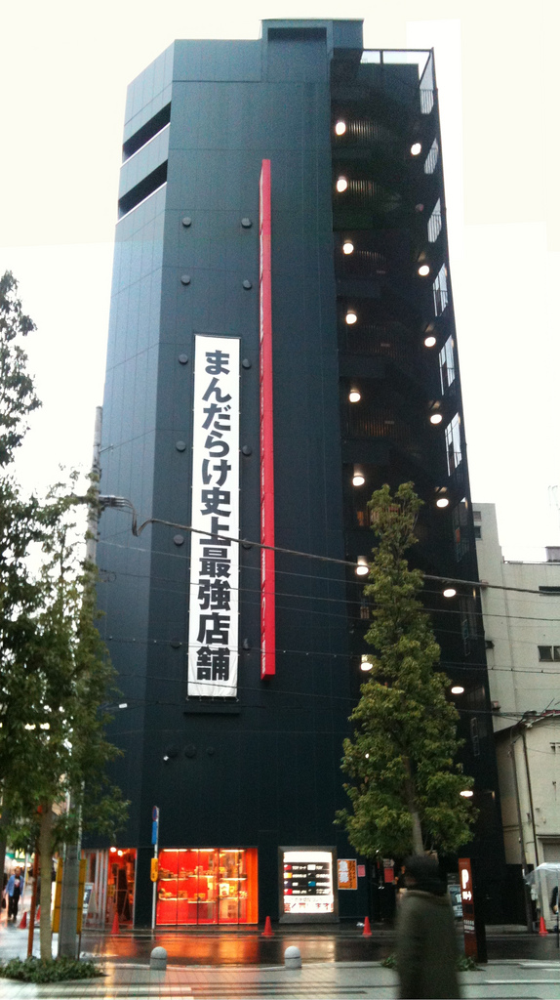
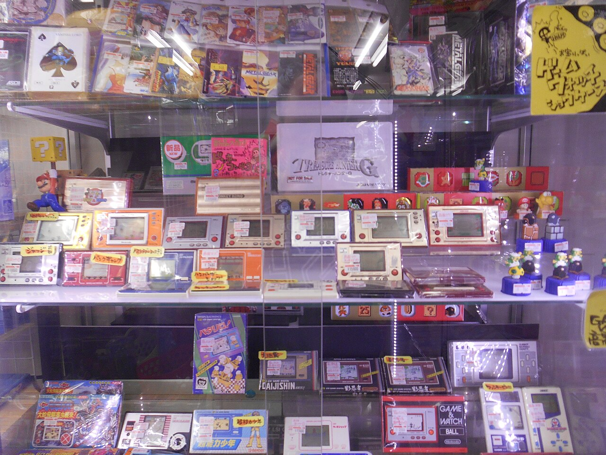
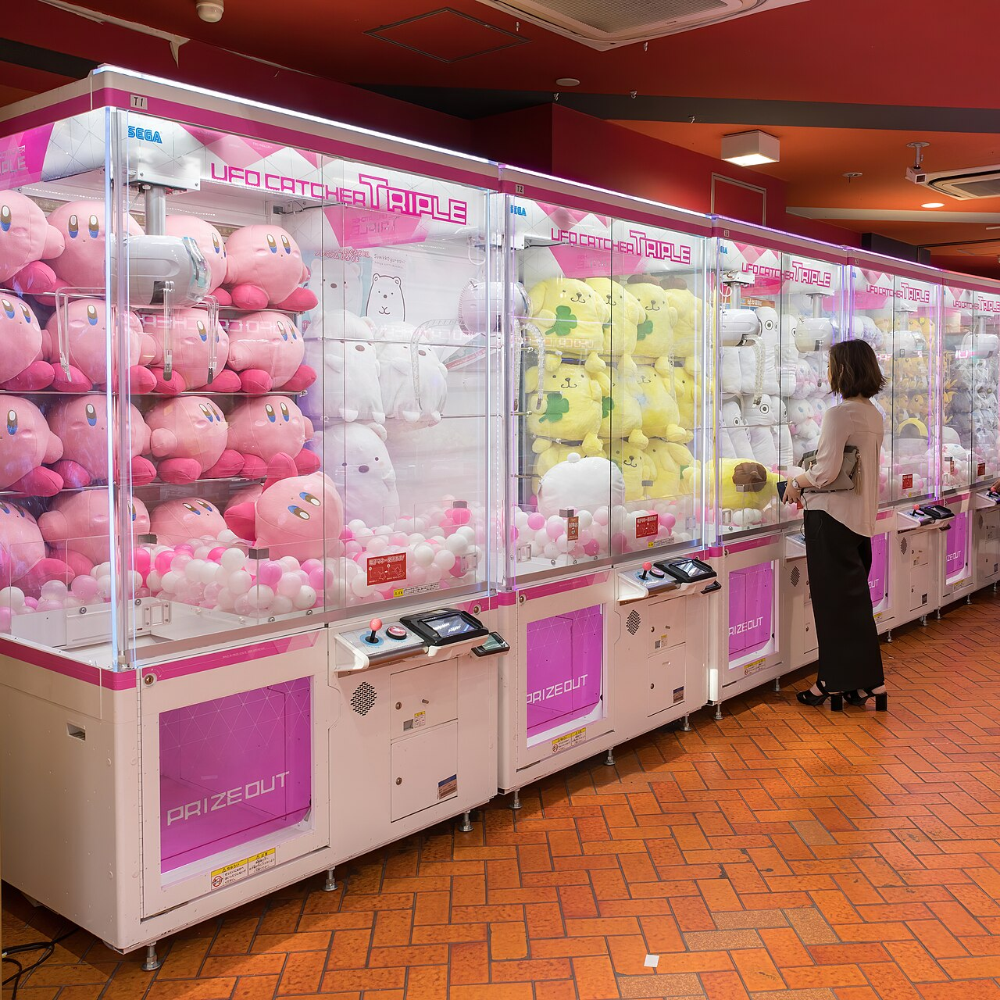
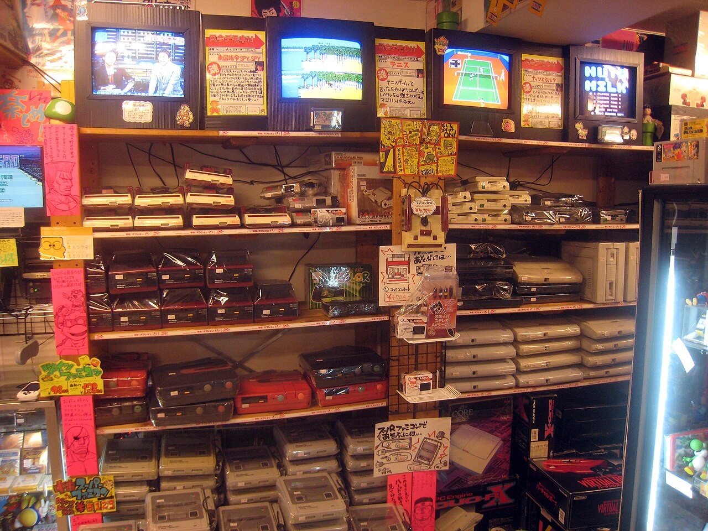
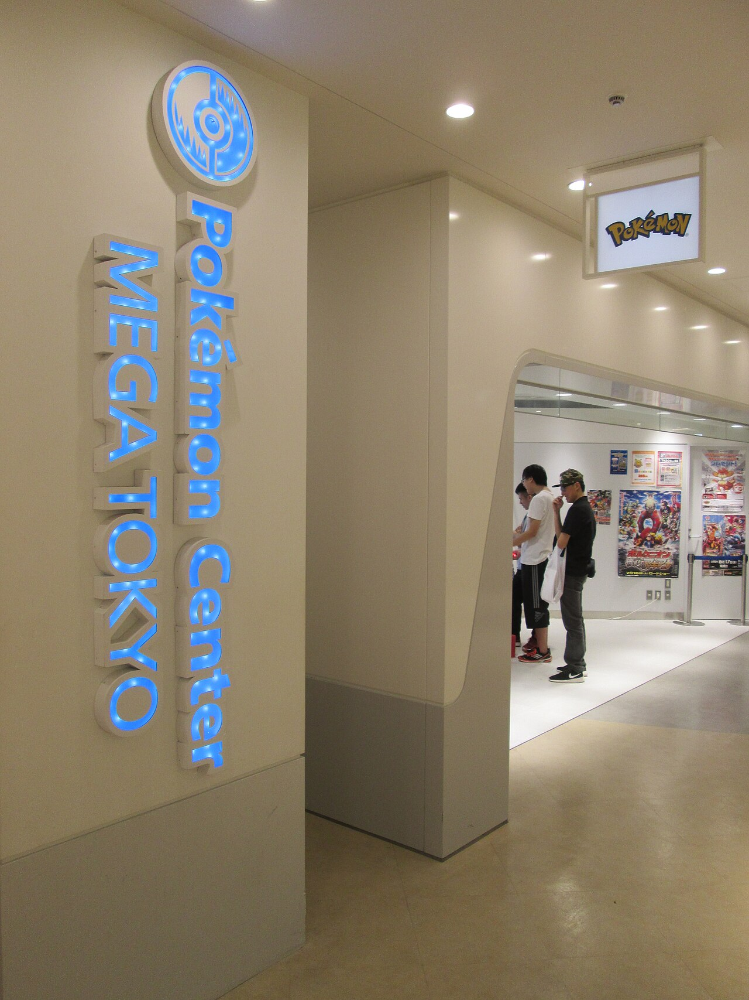
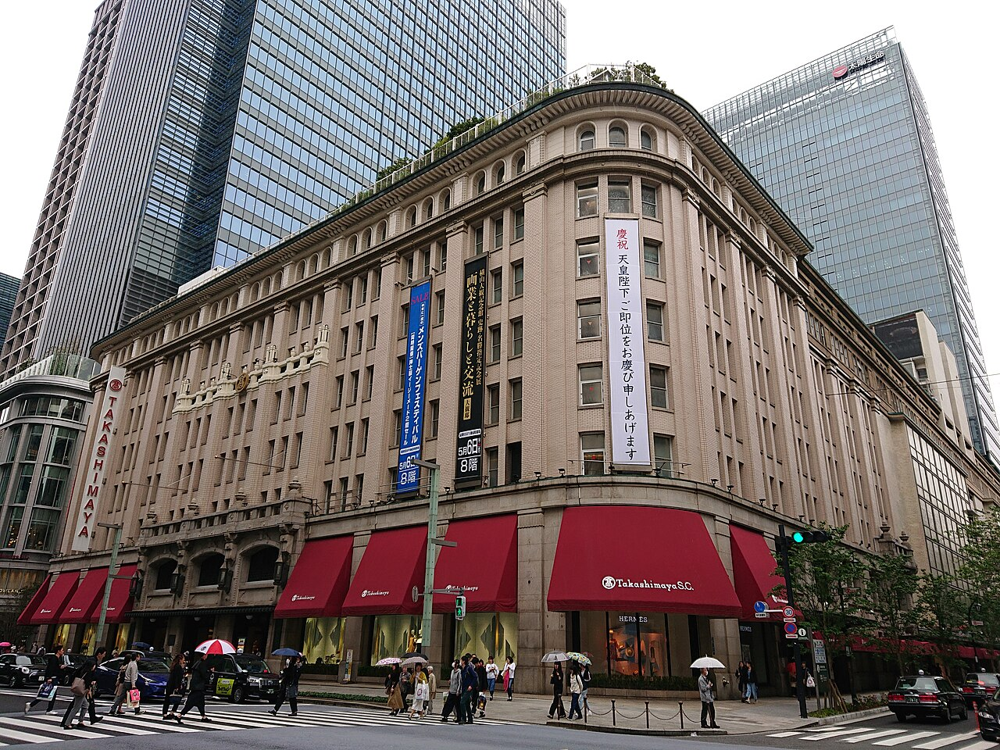
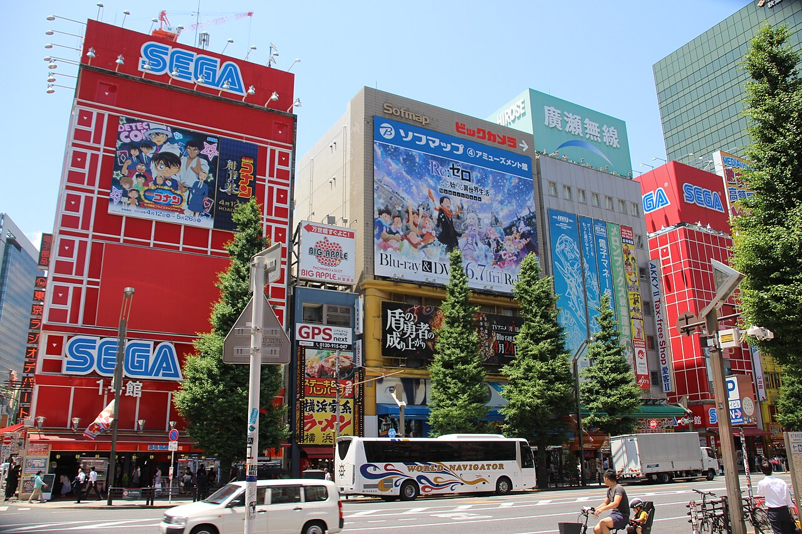

Tokyo · One day
A day of Pokémon cards and Nintendo
3 plans · About 6 to 8 hours
Three ways to spend one day around cards and Nintendo. Pick a plan to see the stops, the route and the official shop pages.
- GuideYour guide
- Start10:45 at Akihabara Station, Electric Town Exit
- LengthAbout 6 to 8 hours
PLAN A/03 ◆
Akihabara only, cards and retro games
- Graded cards
- Retro games
- Arcade
Everything stays inside one square mile. The graded-card lounge opens at 11:00, so the day starts there and the rest follows on foot.
- 10:45
Electric Town crossing in Akihabara, Tokyo. - 11:00
SNKRDUNK Trading Card Akihabara
Trading cards on floors 1 to 3. PSA Lounge Tokyo is on the 5th floor, open 11:00 to 14:00 and 15:00 to 19:30, and closed on Tuesdays and Wednesdays.
- 12:30
- 13:30
Mandarake Complex
Eight floors of vintage toys, manga and collectibles. Open 12:00 to 20:00 every day.

Mandarake Complex building in Akihabara. Photo from 2010. - 14:30
Super Potato
Retro games on floors 3 to 5, with a retro arcade on the 5th floor. Open 11:00 to 20:00 every day.

Display case of handheld games inside Super Potato, Akihabara. Photo from 2015. - 15:45
Hey
A large arcade near the station, open every day. Finish here, or keep browsing.

Claw machines in an Akihabara arcade.
Getting around
Everything is a few minutes on foot.
Good for
Collectors who want the most time in front of the cases.
Keep in mind
The PSA Lounge is closed from 14:00 to 15:00 and on Tuesdays and Wednesdays. The first stop opens at 11:00.
PLAN B/03 ●
Akihabara, then Shibuya for Nintendo
- Graded cards
- Nintendo
- Pokémon Center
A shorter card round in the morning, then Nintendo TOKYO and the Pokémon Center on the same floor of Shibuya PARCO.
- 10:45
Electric Town crossing in Akihabara, Tokyo. - 11:00
SNKRDUNK Trading Card Akihabara
Trading cards on floors 1 to 3, and PSA Lounge Tokyo on the 5th floor. The lounge is open 11:00 to 14:00, so we go first.
- 12:15
Super Potato
Retro games on floors 3 to 5 and a retro arcade on the 5th. Open 11:00 to 20:00.

Shelves of retro consoles inside Super Potato, Akihabara. Photo from 2009. - 13:15
- 14:00
- 14:45
Nintendo TOKYO
Shibuya PARCO, 6th floor. Open 10:00 to 21:00. On busy days entry is by free numbered ticket.
Inside Nintendo TOKYO at Shibuya PARCO. Photo from 2022; the shop may look different today. - 15:45
Pokémon Center Shibuya
On the same floor of Shibuya PARCO. Open 10:00 to 21:00. The day ends here.
Entrance of Pokémon Center Shibuya. Photo from 2022; the shop may look different today.
Getting around
Short walks in Akihabara, then one train ride.
Good for
A mix of card hunting and the big Nintendo and Pokémon stores.
Keep in mind
Shibuya PARCO is crowded in the afternoon. The 6th floor is reached by the marked stairs, and the elevators do not stop there before 10:00.
Links
PLAN C/03 ★
Pokémon Centers across the city
- Pokémon Center
- Cafe
- Graded cards
Two of the largest Pokémon Centers, with the Pokémon Cafe nearby, and a card stop in Akihabara to close the day.
- 10:45
Electric Town crossing in Akihabara, Tokyo. - 11:00
- 11:45
Pokémon Center MEGA TOKYO
Sunshine City alpa, 2nd floor. Open 10:00 to 20:00. The shop reopened on 24 August 2026 after a closure and entry may be limited, so we check its notices first.

Entrance of Pokémon Center MEGA TOKYO in Ikebukuro. Photo from 2016; the shop has been renovated since. - 13:00
- 14:15
- 14:45
Pokémon Center TOKYO DX
Nihonbashi Takashimaya S.C. East Building, 5th floor. Open 10:30 to 21:00.

Takashimaya department store in Nihonbashi. - 15:45
Pokémon Cafe TOKYO
Nearby in the same complex. Seats are booked on the official site only, so book before the day if you want a table.
- 17:15
Back to Akihabara
One last card stop. SNKRDUNK is open until 21:00, and PSA Lounge Tokyo is open until 19:30 with last intake at 18:30.

Colourful buildings along Akihabara Electric Town.
Getting around
Three train rides between the areas.
Good for
Anyone who wants the big stores and the merchandise.
Keep in mind
The most train time of the three plans. The cafe needs a booking. Check the MEGA TOKYO notices for entry rules before the day.
Links
Before the day: three quick questions
Answering takes one or two minutes. It helps your guide plan the stops around you.
If the email button does nothing, use Copy my answers and paste into a reply to the email you received.
Akihabara Station Electric Town Exit
We meet at the Electric Town Exit of Akihabara Station at 10:45.
If another place or time is easier, tell your guide and the plan will be adjusted.
Open in Google Maps ↗Reply with the letter of the plan you want.
Times are approximate and can move on the day. Opening hours come from each shop's official page and can change, so your guide checks them again before the day.
Photo credits
- Akihabara Electric Town, Tokyo, 20240823 1617 5580.jpg, by Jakub Hałun (CC BY 4.0), via Wikimedia Commons
- Mandarake Complex, Akihabara.jpg, by street viewer (CC BY 2.0), via Wikimedia Commons
- Super Potato, Akihabara (22061988538).jpg, by Chester from Toronto, Canada (CC BY 2.0), via Wikimedia Commons
- Claw cranes with kawaii stuffed mascots and a woman playing, Akihabara, Chiyoda, Tokyo, Japan.jpg, by Basile Morin (CC BY-SA 4.0), via Wikimedia Commons
- Super Potato in Akihabara (4066556528).jpg, by JoshBerglund19 from United States (CC BY 2.0), via Wikimedia Commons
- Nintendo TOKYO (52505483607).jpg, by Dick Thomas Johnson from Tokyo, Japan (CC BY 2.0), via Wikimedia Commons
- Pokémon Center Shibuya (52506444865).jpg, by Dick Thomas Johnson from Tokyo, Japan (CC BY 2.0), via Wikimedia Commons
- Mega Tokyo Pokémon Center 4.jpg, by Maplestrip (CC BY 3.0), via Wikimedia Commons
- Nihombashi Takashimaya, at Nihonbashi, Chuo, Tokyo (2019-05-01).jpg, by Lombroso (CC BY-SA 4.0), via Wikimedia Commons
- Akihabara Electric Town 9999 281.jpg, by Hyppolyte de Saint-Rambert (CC BY-SA 4.0), via Wikimedia Commons